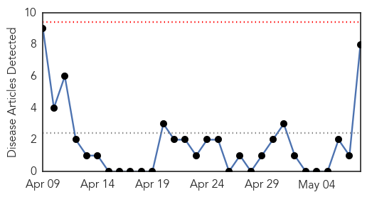
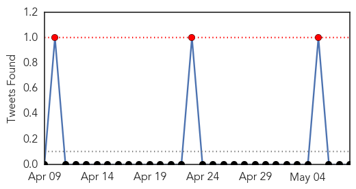

30 Day Trends
Web: 0 alerts, 0 warnings
Twitter: 3 alerts, 0 warnings
Top Articles:
- 0.992
- Govt buries diseases under clean records
- 0.976
- 20 die of cholera in Nigeria
- 0.975
- "Significant progress" in fighting cholera in Haiti
- 0.686
- Bird flu epidemic may return to Vietnam
- 0.593
- Billions Still Lack Access to Safe Drinking Water, Sanitation
- 0.575
- 89pc have access to clean drinking water
- 0.538
- One Billion People Still Practice Open Defecation
- 0.504
- The poor sidelined with access to safer water
Top Tweets:
-
No tweets found for May 08, 2014
Web/News Articles
Tweets
Article Locations